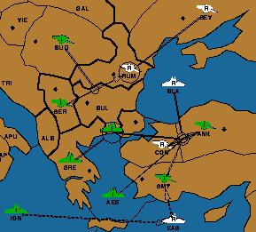

|  |
Italy: A SMY S A ANK - CON A ANK - CON F AEG S A ANK - CON F BUL/SC S A ANK - CON F GRE S F BUL/SC A SER - RUM A BUD S A SER - RUM F ION - EAS Russia: A CON - BLA - ANK F BLA C A CON - ANK F EAS - SMY A RUM H A SEV S A RUMThe arrows on the map make it kind of confusing, but the Black Sea fleet is convoying Constantinople to Ankara -- the location from which an otherwise successful attack on Constantinople was launched. |
 Return to article text
Return to article text